Members’ Classifieds
If you would like to place an advert on this page, please get in-touch with our website editor, Rob (contact details in the sidebar), and he’ll get it published.
The advert will remain on the website for three months after the date of publication and will then be removed. If you have success in selling or acquiring your items in the meantime, please let us know so that we can keep the section relevant and up-to-date.
If after three months you wish for your advert to be re-submitted, please contact Rob again; if this is the case, perhaps you could think about altering the asking price, and possibly submit further photos to enhance the listing and boost your chances of attracting a buyer.
If you are not yet a member, feel free to use this facility to advertise all things Mayflower, but a donation of £10 to the club would be appreciated (cheques made payable to TMC, and sent to the editor; address available on request). This will help in our quest to keep these magnificent cars on the road.
Good luck!
For sale
Cars
Self-explanatory: Mayflowers for sale for range of desired conditions, levels of completion and budgets!
Mayflower for sale
Due to the passing away of its former owner and former member Roger Gleave.
The car has had a lot of work done and Stephen, his son, understands that he will not get back what has been paid out, he is therefore open to realistic offers.
Starts on button.
Some documents available. Car is currently on a drive in Ware, Hertfordshire under cover.
Contact: Stephen Gleave – (01903) 958078, (07932) 532833, stephen@consortglass.com
(Advert posted: 23/03/2023. To be removed: 23/06/2023 or when sold.)
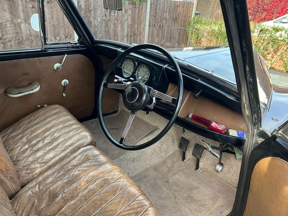 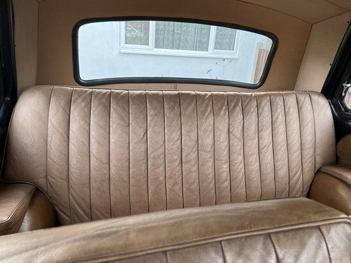 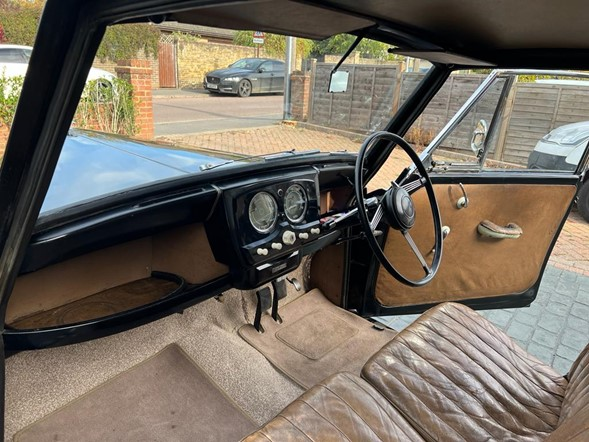 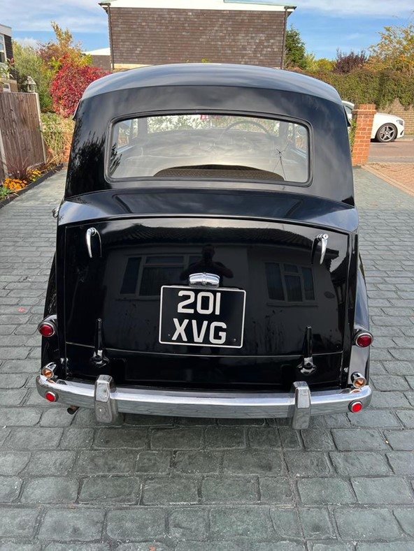 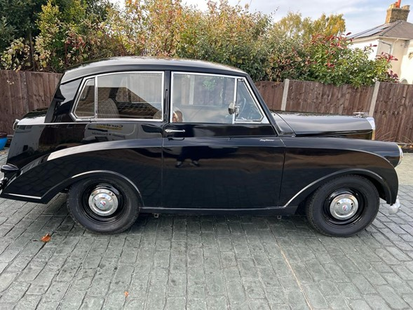 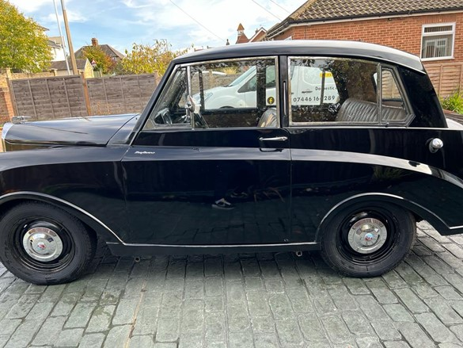 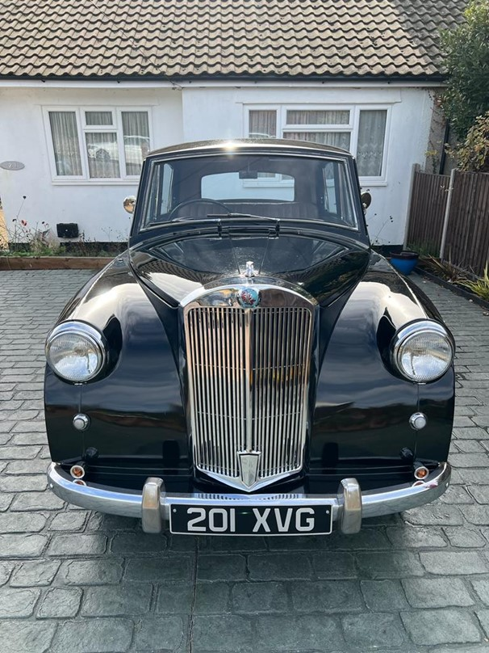 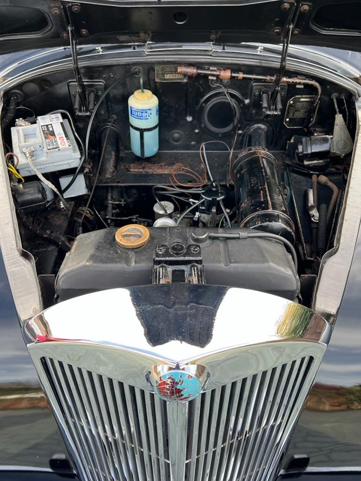Photos of Stephen Gleave’s Mayflower for sale
Triumph Mayflower — First Registered 12th July 1952
“Black with red interior. The car is running and is in fairly good order. It has a set of reasonable tyres and comes with a workshop manual, owner’s manual, and many related documents. There are a couple of boxes of spare parts and a set of new hub caps used for shows.
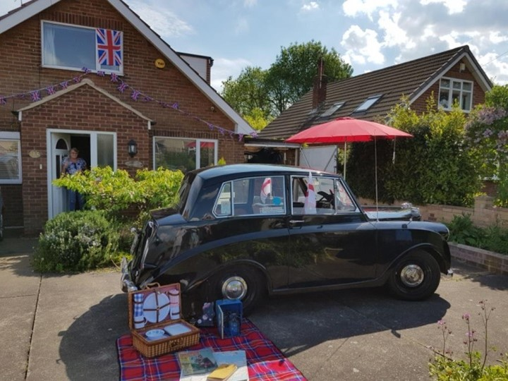I have owned the car since 1990, and due to a house move I now need to pass it on to another loving owner; hence I am only asking £2,000 ono.”
Contact: Keith Pegram – (01909) 540434, (07742) 633199
(Advert posted: 23/03/2023. To be removed: 23/06/2023 or when sold.)
Mayflower for sale
The car seems largely rust free, apart from superficial rust and damaged paintwork, despite being stored for 4 decades.
The engine was filled with oil down the plug holes prior to storage so this may have kept the engine from going solid.
It clearly needs quite a lot of work, but seems basically sound.
Rob wants £1,500 based on being quite solid and even in spares it seems good value (I hope it won’t be broken up — ED).
The registration number is: A999BKY, so has obviously been swapped at some stage.
Phone Rob on (07516) 299930 or his partner Roy on (07724) 425465 for more information or additional photos.
Contact: Rob Beetle – (07516) 299930, rob.vw.beetle@gmail.com. Roy (Rob’s partner) (07724) 425465
(Advert posted: 23/03/2023. To be removed: 23/06/2023 or when sold.)
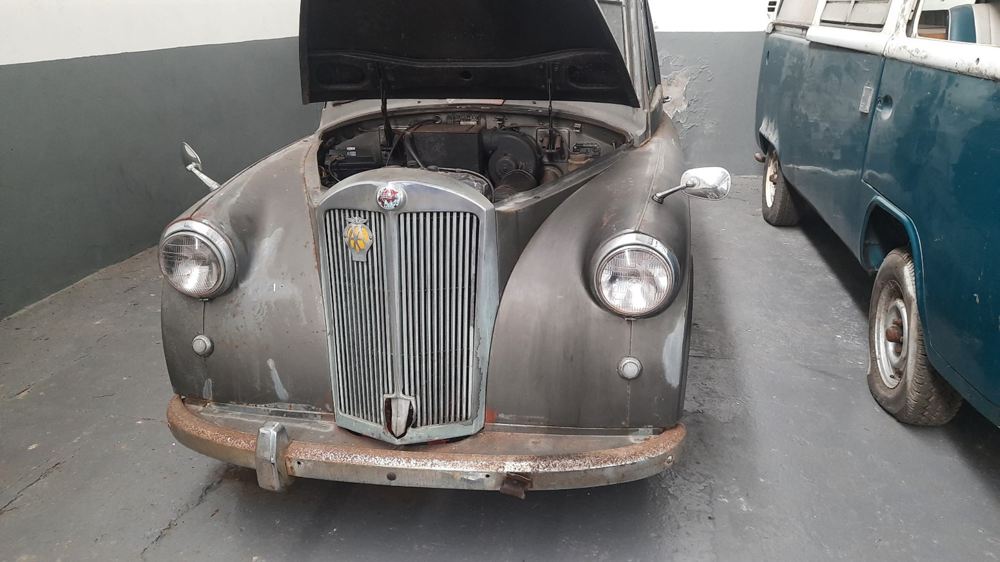 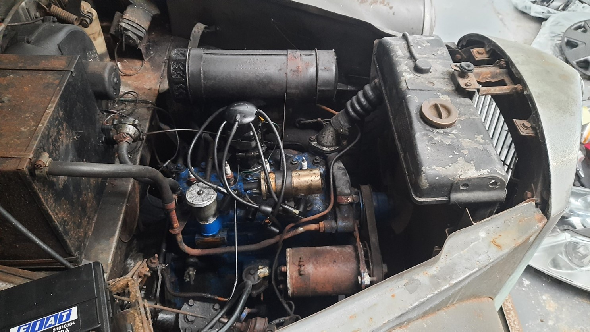 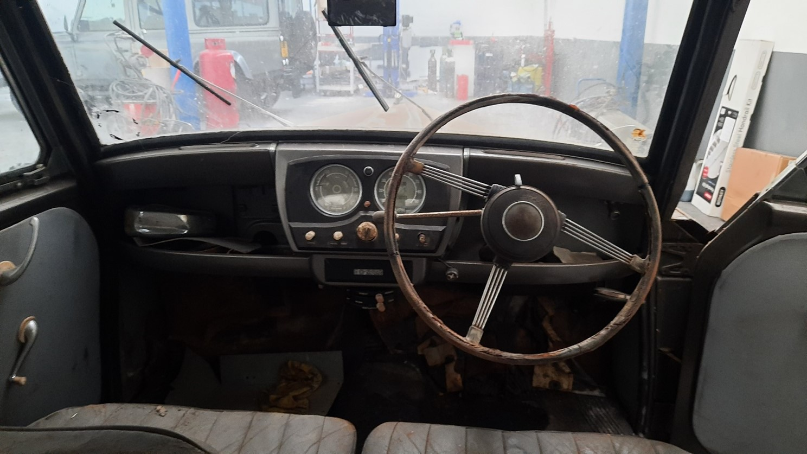 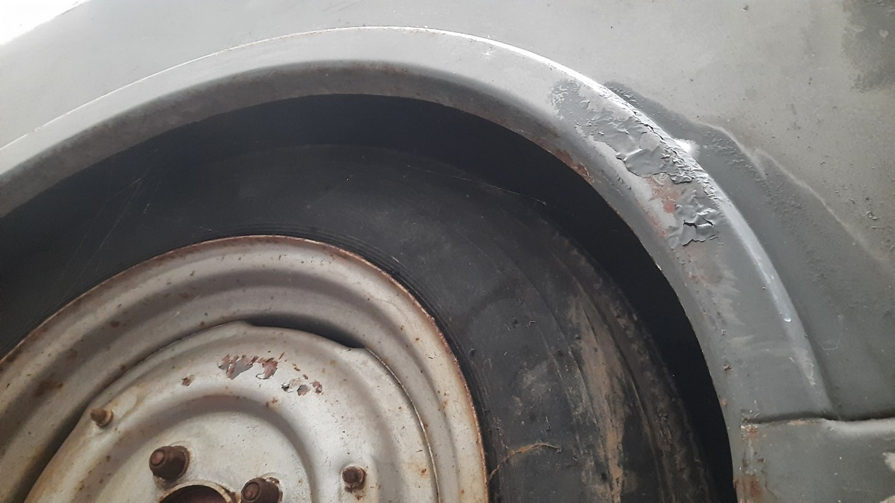 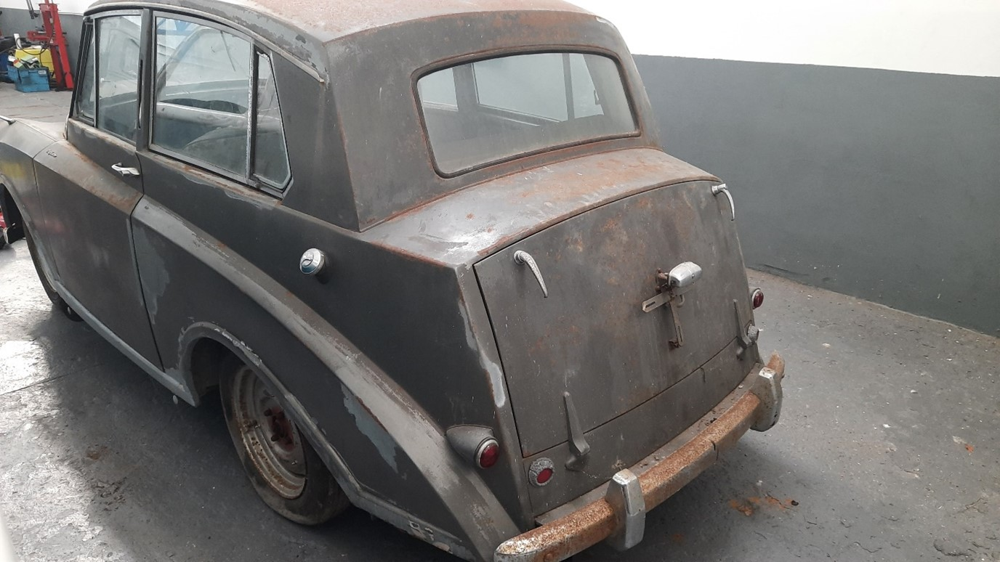Photos of Rob Beetle’s Mayflower for sale
Parts
Missing something for your build? A part just bitten the dust on you? Be sure to check this section first, in case one of your fellow members is looking to offload one (of course the spares department always has an extensive selection if you can’t find what you’re after here)! If you wish to have a ‘clear out’, gain a little cash and give others the opportunity to obtain the parts they need to keep their Mayflower on the road, then why not contact Rob to have your advert included?
For Sale — Mayflower Parts
- Windscreen.
- Rear window (later type).
- Crankshaft.
- Back seat lower squab in brown leather.
- Engine side plate.
- 3 nave plates.
Due to size and fragility/weight, they would need collecting from South Yorkshire, or John could possibly deliver them to a Rally by arrangement. He’s open to reasonable offers for them as a whole or individually.
Contact: John Oglesby (407) – jfoglesby54@gmail.com, (01302) 486291 (telephone evenings only, please)
(Advert posted: 16/04/2023. To be removed: 16/07/2023 or when sold.)
Radiator Surround for Sale
“My name is David Clarke and I’m a member of the TROC Ltd.
I have a Razor Edge radiator surround which is obviously not going to fit a Roadster. If any of your members are in need of a straight surround that is need of re-chroming, please feel free to give them my email address.
David”
Contact: David Clarke – david.southscarle@btinternet.com
(Advert posted: 23/03/2023. To be removed: 23/06/2023 or when sold.)
Miscellaneous
This section is for memorabilia, instruction manuals or books associated with the Mayflower. If you have any such unwanted clutter, why not advertise it and let it become someone else’s cherished possession!
(No listings at present.)
Wanted
Cars
If you’ve always wanted a Triumph Mayflower (and why not!?), but the right car for you isn’t yet advertised in the cars for sale section, then you can place a free ‘wanted’ request here, stating the condition you would be looking for (e.g. fully-restored, running but needs attention, or even a complete project), together with your price-range and contact details, and we’ll see if we can put you in touch with a possible seller.
(No listings at present.)
Parts
If you’re in need of a particular part to complete your project, or just to get back on the road again, firstly look in the parts for sale section, as well as the club’s spares catalogue; then you can place a free request here, stating exactly what you need, and we’ll see if we can put you in-touch with a possible seller.
(No listings at present.)
Miscellaneous
If you’re looking for a particular book, piece of memorabilia or anything else Mayflower-related, and you can’t find it in the miscellaneous for sale section, then you can place a free request here, stating exactly what you need, and we’ll see if we can put you in-touch with a possible seller.
(No listings at present.)